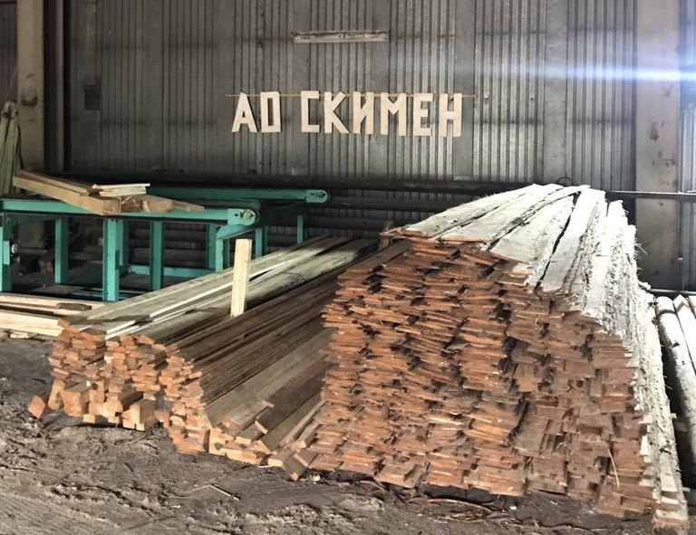
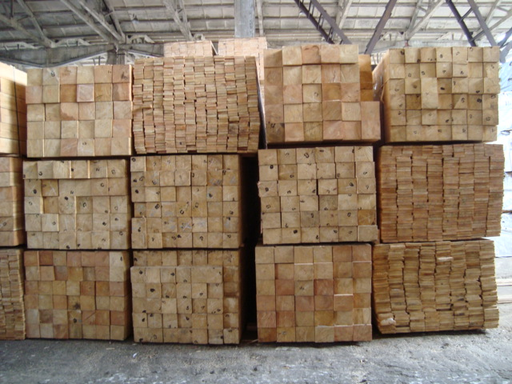
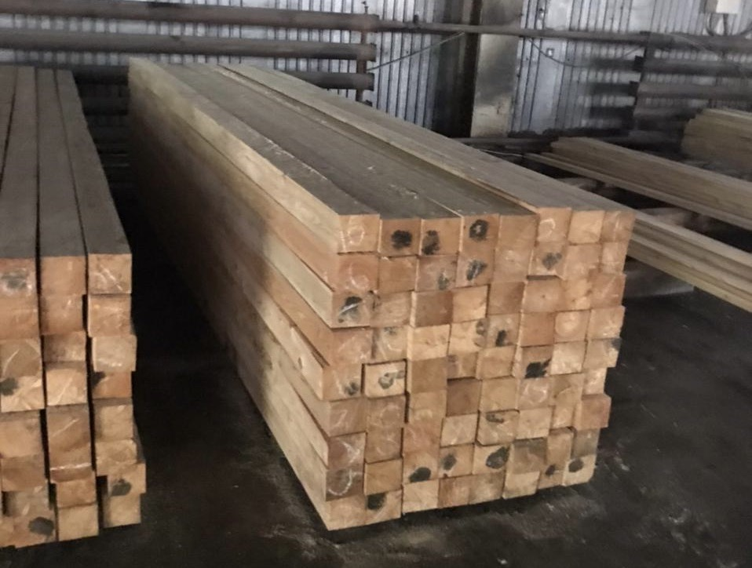
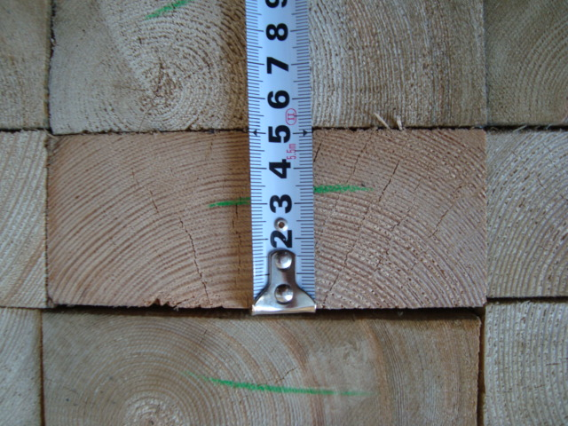
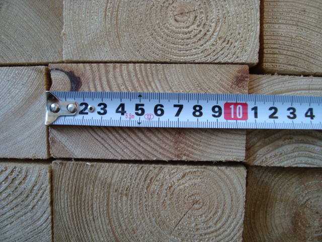
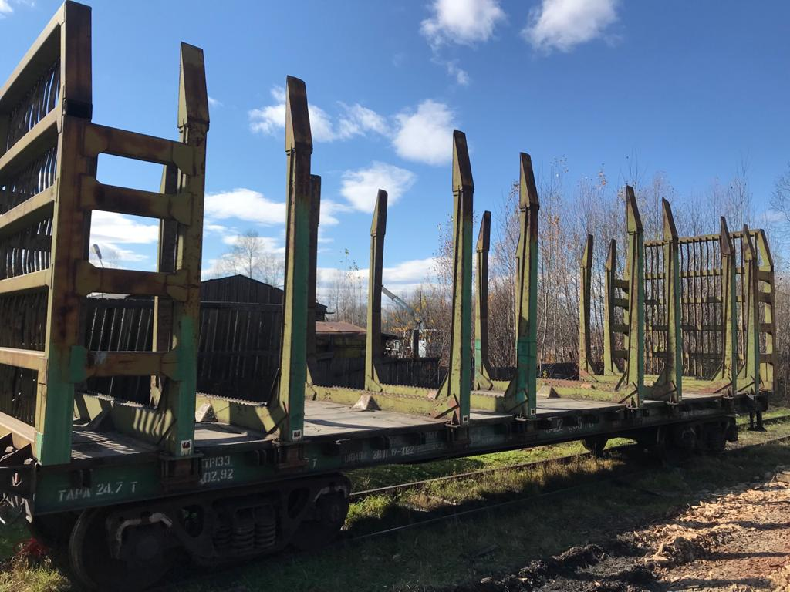
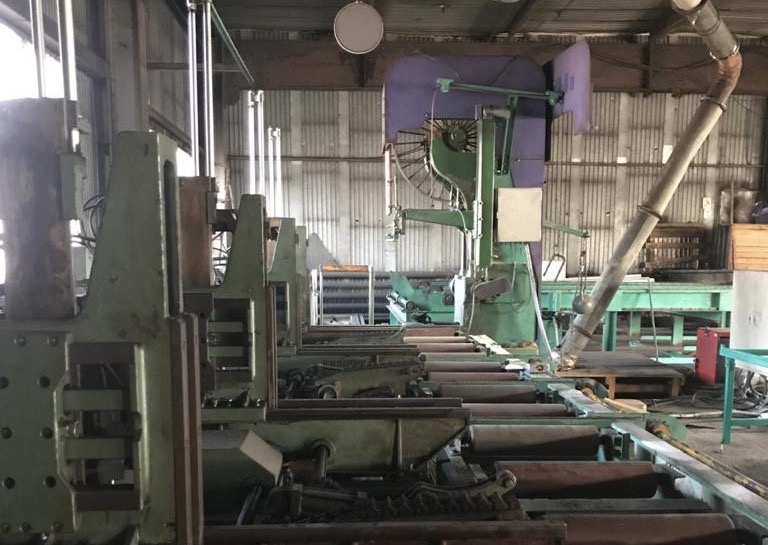
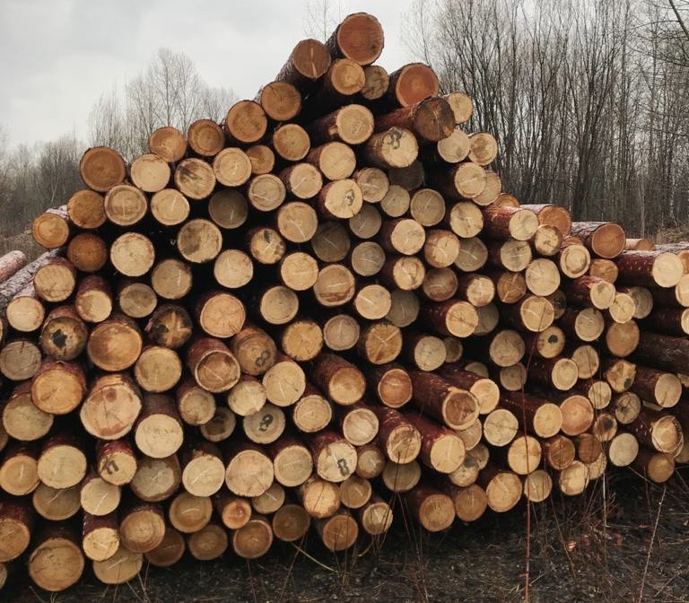
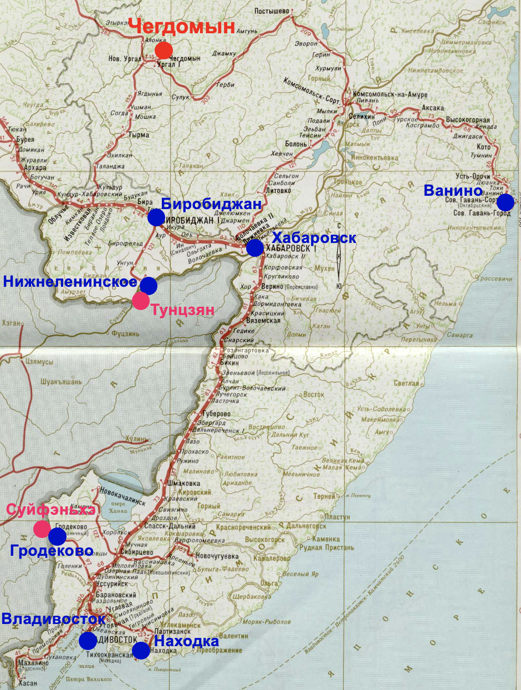

Общая информация
Начало промышленной эксплуатации лесозавода: 1 марта 2007 г. Лесозавод АО «Скимен» является конкурентоспособным производителем высококачественных пиломатериалов на российском и на международном рынках. Завод расположен в Хабаровском крае.
Завод специализируется на производстве:
- доски обрезной;
- бруса, бруска;
- иной продукции (по заявке клиента).



Лесозавод производит пиломатериалы высокого качества согласно ГОСТ 26002-83, ГОСТ 8486-88. Пиломатериалы различного сечения длиной 4,00 метра (или 6,00 метров) естественной влажности из лиственницы, ели/пихты (а также березы и осины).


Производственная мощность завода «Скимен»:
- 36 000 м3/год пиломатериала;
- 60 000 м3/год по входящему сырью.
Производственный комплекс завода в цифрах:
- земельный участок – 1,85 га;
- возможный доп. земельный участок – 4,00 га;
- здание производственного корпуса – 1 000 м2;
- макс. разрешенные электрические мощности – 280 кВт;
- возможные доп. электрические мощности – 1,7 мВт.
Оборудование: установленное на заводе оборудование производства японской фирмы «Oi Seisakusho Co., LTD».
Транспортное сообщение: завод располагает удобными подъездными авто и ж.д. путями. Станция Чегдомын (код станции 91720) находится недалеко от главного хода Байкало-Амурской магистрали.
Лесообеспечение: осуществляется круглогодично автомобильным и ж.д. транспортом с лесопунктов до 200 км.
Отгрузка пиломатериала: осуществляется автомобильным и ж.д. транспортом.
на главную
Достоинства
Районный центр: лесозавод АО «Скимен», это обустроенная стратегическая площадка для переработки леса, расположенная в
центральном населенном пункте Верхнебуреинского района Хабаровского края с развитой инфраструктурой, достаточными резервами по
энергообеспечению и непосредственно примыкающая к действующему ж.д. тупику.

Ж.д. тупик примыкает к территории завода
Оборудование: установленное японское промышленное ленточнопильное оборудование «Oi Seisakusho Co., LTD» позволяет решить
проблему высокого качества распиловки круглого леса с большим количеством вариантов его последующей доработки на
площадке. Высокая автоматизация, предпочтительная переработка средних и больших диаметров, возможность распиловки брёвен длиной до
6 м. Ленточнопильные линии традиционно используются на японских деревообрабатывающих заводах, удаленных от источников
сырья, поскольку обеспечивают более высокий процент полезного выхода пиломатериала. Средний полезный выход готовой
продукции в зависимости от спецификации достигает 58-62%.

Надежное японское оборудование («Oi Seisakusho Co., LTD»)
Промышленная площадка: технологическая линия, производственный корпус, внутренняя планировка цеха, сложно профильные
заливные фундаменты под все станки проектировались специалистами японской компании «Oi Seisakusho Co., LTD» для площадки
Чегдомын. Ими же осуществлялся шеф-монтаж всего оборудования. Вся территория производственной площадки лесозавода АО
«Скимен» благоустроена отсыпкой более 4000 м3 зольно-гравийной смеси с последующей планировкой и уплотнением.

Сырье для производства на Лесной Бирже
Перспективы стратегического развития: генеральным проектом лесопильного комплекса предусмотрено строительство сушильных камер и цеха столярных и
клееных конструкций. На заводе возможна установка дополнительного оборудования как внутри производственного корпуса, так и вне его. Планируется производство топливных брикетов из отходов лесопиления.
Перспективы транспортного развития: после сдачи в эксплуатацию железнодорожного моста через Амур в районе Нижнеленинское-Тунцзян в Еврейской АО и начале
работы там крупного погранично-таможенного грузового терминала между Россией и Китаем, существенно снижаются расходы на
ж.д. перевозку и сроки доставки груза клиентам.
на главную
Расположение
Местонахождение завода:
Хабаровский край, Верхнебуреинский р-н, р.п. Чегдомын, ул. Магистральная, 28 (Yandex / Google Maps).
Дальневосточная железная дорога
Расстояния доставки готовой продукции по железной дороге:
- ст. Чегдомын - ст. Гродеково 1 415 км;
- ст. Чегдомын - ст. Владивосток 1 430 км;
- ст. Чегдомын - ст. Находка 1 564 км;
- ст. Чегдомын - ст. Ленинск 612 км.
на главную
Контакты
Акционерное Общество «СКИМЕН»
Адрес производства:
Хабаровский край, Верхнебуреинский р-н, р.п. Чегдомын, ул. Магистральная, 28
Электронная почта:
sceamen.info@gmail.com
Телефон:
+7 985 929 22 44
WeChat / WhatsApp / Viber / Telegram:
+7 985 929 22 44
на главную